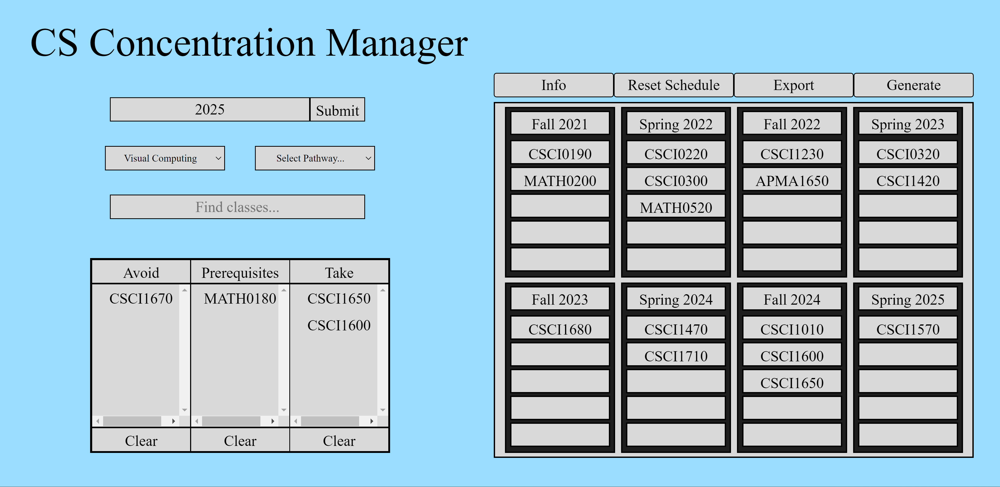
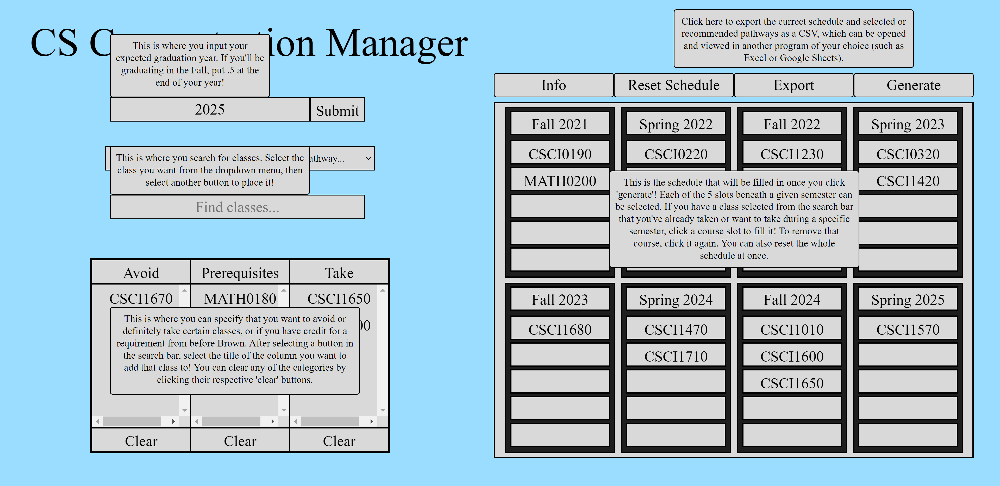
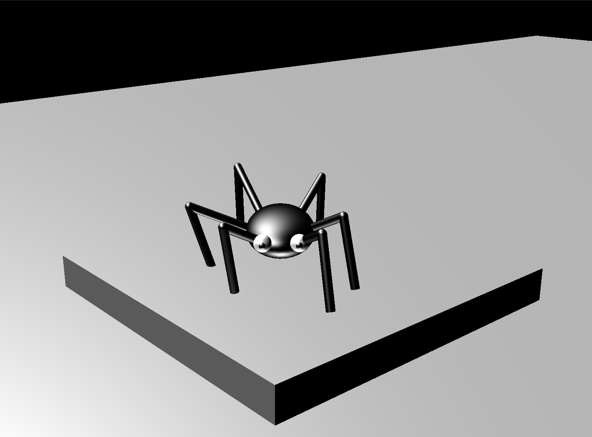
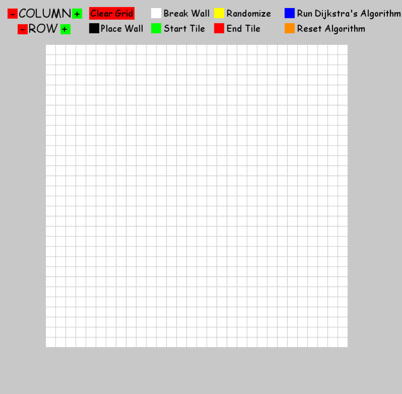
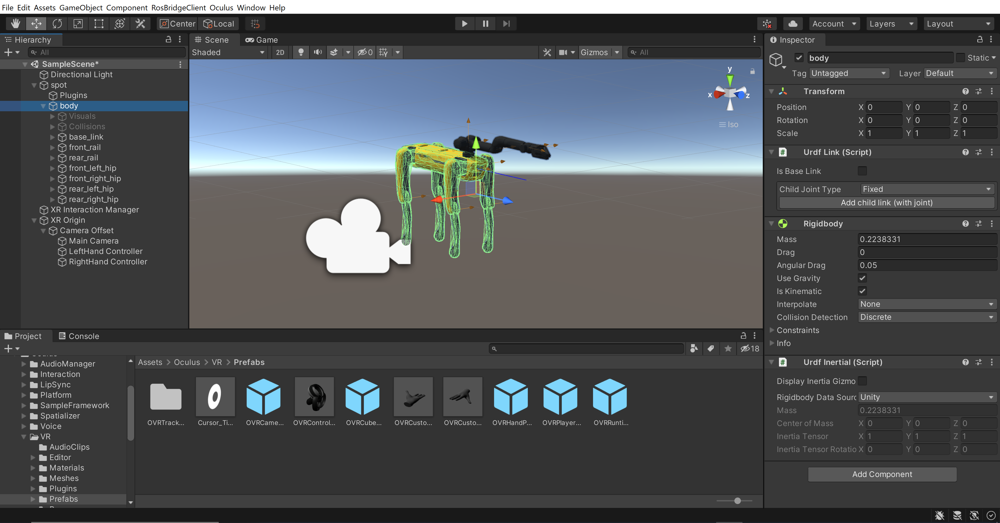

Austin Funk
📻 Computer Engineering at Brown University
Who I Am
I'm a rising junior (class of 2025) studying computer engineering at Brown University. My areas of interest include web development, systems programming, 3D graphics, robotics, and general electronics. I enjoy teaching and have been a teaching assistant for two computer science courses, CS19 and CS300, and I'll be a teaching assistant for CS1230 for the Fall 2023 semester. I've also worked for iD Tech Camps and in the Humans to Robots lab. I am working at Hologic for this Summer as a systems engineering intern. A few of my projects are featured on this site but feel free to visit my Github pages here and here. Beyond academics, I'm an Eagle Scout, I'm a member of IgniteCS at Brown, and I love playing my alto saxophone.
If you're interested in my work or would like to learn more about what I do, feel free to reach out via LinkedIn or by email.
🔭 Projects
Computer Science Concentration Manager
With a team of three others, we built the Computer Science Concentration Manager for our final project in CS32. Below are two screenshots of the interface, one without the information boxes displayed and one with the boxes. The goal of the project was to provide computer science students at Brown an easy-to-use tool to non-deterministically generate a schedule based on the user's preferences and previous courses.
The tool provides many user tested and suggested features, including a custom graduation year, a dropdown with different pathway options, a search bar with an up-to-date database of courses that can be used to fulfill the computer science ScB requirements, a table with different categories to sort courses into, an interactive schedule that allows for easy and intuitive editing, and several more quality of life features. Using these constraints, a backend optimizer built using Google OR-Tools creates a suggested schedule that differs with each generation, even when given the same inputs. The backend is written primarily with Java, while the frontend uses HTML/CSS/TypeScript with React, Node.js, Jekyll, and more.
Itsy Bitsy Spider
My final project for CS1230 was Itsy Bitsy Spider, a user-controlled spider that uses inversed kinematics to animate its legs. The project utilizes OpenGL and C++ as its primary technologies. This was a partner project that we designed to further our skills with graphics programming. The idea to use inverse kinematics is borrowed from the field of robotics and involves solving a set of complex equations to determine the angles between leg segments given the position of the foot and the shoulder.
Maze Solver
My maze solver is built using Python and PyGame. The project provides a visual and interactive demo of Dijkstra's algorithm and gives intuition into how it works. The program allows users to change the size of the board, randomly generate mazes, create and edit mazes, place custom start and end points, clear the canvas, and run/rerun Dijkstra's algorithm. The project has states for both possible and impossible maze designs, using a wave of blue tiles to indicate where the algorithm has searched and a yellow path to indicate the shortest path to solve the maze. The project is built to be easily extensible to incorporate other search algorithms, such as A* and Trémaux's algorithm.
🔬 Research
I've worked in the Humans to Robots lab under Professor James Tompkin and PhD student Eric Rosen, along with a team of other undergraduates. We worked on expanding the VR teleoperation project, applying developed technology to a different VR headset and robot, specifically the Oculus and Boston Dynamics SPOT. Some of the key technologies involved include ROS and Unity.
💼 Work History
Intern, Systems Engineer
Hologic
For the duration of this summer I am working at Hologic, a medical devices manufacturer and innovator. As of updating the site, I've successfully finished a desktop application that allows engineers and technicians to quickly and easily change the device settings of one of Hologic's diagnostic machines. The technologies used include WPF, C#, .NET, and SQL. Some of the features include custom favorites, uploading new settings from JSON files, importing and exporting the current settings as a CSV or in a more human-readable format, a searchbar that utilizes Levenshtein distance to find settings within a tree structure, and is stateful to allow for one-time setup. I've made changes and added features based on the needs of senior developers in my division, including tooltips for favorites, highlighting favorite settings whose values differ from the original JSONs, and adjustments to the UI to account for the smaller screen size of the imager. I am in the process of installing cameras with custom scripting into some of the test imagers, and will start on a computer vision project using OpenCV to help the imager intelligently find medical slides at some point soon.
Undergraduate Teaching Assistant
Brown University
I was a UTA for CSCI 0190 for the Fall 2022 semester and was a UTA for CSCI 0300 for the Spring 2023 semester. My responsibilities for CS19 included grading 5 to 10 programming assignments for 4 hours per week; running weekly 2-hour labs for ~25 students on various topics, including Git, Linux commands, SQL, and more; holding 2-hour weekly office hours to help ~8 students with conceptual and practical questions; and expanding the class's mentorship program, which included mentoring 5 students. As a UTA for CS300, my responsibilities included holding project and lab specific office hours for 3 hr/week for assignments focused on C/C++ programming, multithreading, and more; grading ~12 project submissions weekly or biweekly, depending on deadlines; and helping students with debugging through the class's online discussion board. For the upcoming Fall 2023 semester, I will be a UTA for CSCI 1230, Introduction to Computer Graphics. I'll be working to improve the class over the summer in several ways, including improvements to the grading infrastructure to make the process faster and smoother for both students and staff.
iD Tech Camps
This role was a lot of fun, I acted as a mix between camp counselor and programming instructor, which required me to actively work for ~17 hr/day Sunday through Friday. While a lot of work, I found the experience to be very rewarding. I had to opportunity to teach courses on machine learning with Python to high schoolers, Java programming for high schoolers, game design with Roblox to middle schoolers, and Scratch to 7 and 8 year olds. The class sizes ranged from 5 to 12 with the whole camp being a maximum of around 60 campers. Some campers would spend the night, so my team and I would be responsible for feeding and taking care of ~20 campers per week, 24/7. I got to work with students of all backgrounds and ability, and learned a lot about teamwork, leadership, and education.
Biocore LLC
Biocore is a biomechanics lab contracted by the NFL to develop safety standards for various equipment, most prominantly helmets and cleats. This was a part time position in high school that I got because my dad was a part of the relatively small company. I'm including it here because it was my first working experience and gave me a lot of insight into engineering as a profession. I got hands-on experience with 3D printing mouth scans of NFL players for specialized mouth guard manufacturing, construction of multiple types of specialized equipment (including trays of artificial turf and mouth guard sanitation cases), and hardware testing with Python and Jupyter Notebooks.
Thanks for visiting!